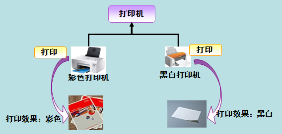

C# 多态性
多态是同一个行为具有多个不同表现形式或形态的能力。
多态性意味着有多重形式。在面向对象编程范式中，多态性往往表现为"一个接口，多个功能"。
多态性可以是静态的或动态的。在静态多态性中，函数的响应是在编译时发生的。在动态多态性中，函数的响应是在运行时发生的。
在 C# 中，每个类型都是多态的，因为包括用户定义类型在内的所有类型都继承自 Object。
多态就是同一个接口，使用不同的实例而执行不同操作，如图所示：

现实中，比如我们按下 F1 键这个动作：
- 如果当前在 Flash 界面下弹出的就是 AS 3 的帮助文档；
- 如果当前在 Word 下弹出的就是 Word 帮助；
- 在 Windows 下弹出的就是 Windows 帮助和支持。
同一个事件发生在不同的对象上会产生不同的结果。
静态多态性
在编译时，函数和对象的连接机制被称为早期绑定，也被称为静态绑定。C# 提供了两种技术来实现静态多态性。分别为：
- 函数重载
- 运算符重载
运算符重载将在下一章节讨论，接下来我们将讨论函数重载。
函数重载
您可以在同一个范围内对相同的函数名有多个定义。函数的定义必须彼此不同，可以是参数列表中的参数类型不同，也可以是参数个数不同。不同重载只有返回类型不同的函数声明。
下面的实例演示了几个相同的函数Add()，用于对不同个数参数进行相加处理：
实例
namespace PolymorphismApplication
{
public class TestData
{
public int Add(int a, int b, int c)
{
return a + b + c;
}
public int Add(int a, int b)
{
return a + b;
}
}
class Program
{
static void Main(string[] args)
{
TestData dataClass = new TestData();
int add1 = dataClass.Add(1, 2);
int add2 = dataClass.Add(1, 2, 3);
Console.WriteLine("add1 :" + add1);
Console.WriteLine("add2 :" + add2);
}
}
}
下面的实例演示了几个相同的函数print()，用于打印不同的数据类型：
实例
namespace PolymorphismApplication
{
class Printdata
{
void print(int i)
{
Console.WriteLine("输出整型: {0}", i );
}
void print(double f)
{
Console.WriteLine("输出浮点型: {0}" , f);
}
void print(string s)
{
Console.WriteLine("输出字符串: {0}", s);
}
static void Main(string[] args)
{
Printdata p = new Printdata();
// 调用 print 来打印整数
p.print(1);
// 调用 print 来打印浮点数
p.print(1.23);
// 调用 print 来打印字符串
p.print("Hello Runoob");
Console.ReadKey();
}
}
}
当上面的代码被编译和执行时，它会产生下列结果：
输出整型: 1 输出浮点型: 1.23 输出字符串: Hello Runoob
动态多态性
C# 允许您使用关键字abstract创建抽象类，用于提供接口的部分类的实现。当一个派生类继承自该抽象类时，实现即完成。抽象类包含抽象方法，抽象方法可被派生类实现。派生类具有更专业的功能。
请注意，下面是有关抽象类的一些规则：
- 您不能创建一个抽象类的实例。
- 您不能在一个抽象类外部声明一个抽象方法。
- 通过在类定义前面放置关键字sealed，可以将类声明为密封类。当一个类被声明为sealed时，它不能被继承。抽象类不能被声明为 sealed。
下面的程序演示了一个抽象类：
实例
namespace PolymorphismApplication
{
abstract class Shape
{
abstract public int area();
}
class Rectangle: Shape
{
private int length;
private int width;
public Rectangle( int a=0, int b=0)
{
length = a;
width = b;
}
public override int area ()
{
Console.WriteLine("Rectangle 类的面积：");
return (width * length);
}
}
class RectangleTester
{
static void Main(string[] args)
{
Rectangle r = new Rectangle(10, 7);
double a = r.area();
Console.WriteLine("面积： {0}",a);
Console.ReadKey();
}
}
}
当上面的代码被编译和执行时，它会产生下列结果：
Rectangle 类的面积： 面积： 70
当有一个定义在类中的函数需要在继承类中实现时，可以使用虚方法。
虚方法是使用关键字virtual声明的。
虚方法可以在不同的继承类中有不同的实现。
对虚方法的调用是在运行时发生的。
动态多态性是通过抽象类 和 虚方法实现的。
以下实例创建了 Shape 基类，并创建派生类 Circle、 Rectangle、Triangle， Shape 类提供一个名为 Draw 的虚拟方法，在每个派生类中重写该方法以绘制该类的指定形状。
实例
using System.Collections.Generic;
public class Shape
{
public int X { get; private set; }
public int Y { get; private set; }
public int Height { get; set; }
public int Width { get; set; }
// 虚方法
public virtual void Draw()
{
Console.WriteLine("执行基类的画图任务");
}
}
class Circle : Shape
{
public override void Draw()
{
Console.WriteLine("画一个圆形");
base.Draw();
}
}
class Rectangle : Shape
{
public override void Draw()
{
Console.WriteLine("画一个长方形");
base.Draw();
}
}
class Triangle : Shape
{
public override void Draw()
{
Console.WriteLine("画一个三角形");
base.Draw();
}
}
class Program
{
static void Main(string[] args)
{
// 创建一个 List<Shape> 对象，并向该对象添加 Circle、Triangle 和 Rectangle
var shapes = new List<Shape>
{
new Rectangle(),
new Triangle(),
new Circle()
};
// 使用 foreach 循环对该列表的派生类进行循环访问，并对其中的每个 Shape 对象调用 Draw 方法
foreach (var shape in shapes)
{
shape.Draw();
}
Console.WriteLine("按下任意键退出。");
Console.ReadKey();
}
}
当上面的代码被编译和执行时，它会产生下列结果：
画一个长方形 执行基类的画图任务 画一个三角形 执行基类的画图任务 画一个圆形 执行基类的画图任务 按下任意键退出。
下面的程序演示通过虚方法 area() 来计算不同形状图像的面积：
实例
namespace PolymorphismApplication
{
class Shape
{
protected int width, height;
public Shape( int a=0, int b=0)
{
width = a;
height = b;
}
public virtual int area()
{
Console.WriteLine("父类的面积：");
return 0;
}
}
class Rectangle: Shape
{
public Rectangle( int a=0, int b=0): base(a, b)
{
}
public override int area ()
{
Console.WriteLine("Rectangle 类的面积：");
return (width * height);
}
}
class Triangle: Shape
{
public Triangle(int a = 0, int b = 0): base(a, b)
{
}
public override int area()
{
Console.WriteLine("Triangle 类的面积：");
return (width * height / 2);
}
}
class Caller
{
public void CallArea(Shape sh)
{
int a;
a = sh.area();
Console.WriteLine("面积： {0}", a);
}
}
class Tester
{
static void Main(string[] args)
{
Caller c = new Caller();
Rectangle r = new Rectangle(10, 7);
Triangle t = new Triangle(10, 5);
c.CallArea(r);
c.CallArea(t);
Console.ReadKey();
}
}
}
当上面的代码被编译和执行时，它会产生下列结果：
Rectangle 类的面积： 面积：70 Triangle 类的面积： 面积：25其他扩展
yuri
246***6318@qq.com
C# 多态性
多态：一个接口多个功能。
静态多态性：编译时发生函数响应（调用）；
动态多态性：运行时发生函数响应。
静态绑定（早期绑定）：编译时函数和对象的连接机制。 两种技术实现静态多态性：函数重载/运算符重载。
函数重载：在同一范围内对相同函数名有多个定义，可以是参数类型或参数个数的不同，但不许只有返回值类型不同。
运算符重载：
关键字 abstract 声明抽象类：用于接口部分类的实现（派生类继承抽象类时，实现完成）。抽象类包含抽象方法，抽象方法可被派生类实现。
抽象类规则：
关键字virtual声明虚方法:用于方法在继承类中的实现（在不同的继承类中有不同的实现）。
抽象类和虚方法共同实现动态多态性。
注：继承类中的重写虚函数需要声明关键字 override，在方法参数传入中写（类名 形参名）例如 public void CallArea(Shape sh)，意思是传入一个 shape 类型的类。
yuri
246***6318@qq.com
p
roz***ech@gmail.com
virtual 和 abstract
virtual和abstract都是用来修饰父类的，通过覆盖父类的定义，让子类重新定义。
重载和重写
重载(overload)是提供了一种机制, 相同函数名通过不同的返回值类型以及参数来表来区分的机制。
重写(override)是用于重写基类的虚方法,这样在派生类中提供一个新的方法。
p
roz***ech@gmail.com
zeng123m
705***981@qq.com
参考地址
抽象方法和虚方法的区别
简单说，抽象方法是需要子类去实现的。虚方法是已经实现了的，可以被子类覆盖，也可以不覆盖，取决于需求。
抽象方法和虚方法都可以供派生类重写。
zeng123m
705***981@qq.com
参考地址
Lost丶先生
102***8263@qq.com
参考地址
1、重载(overload): 在同一个作用域(一般指一个类)的两个或多个方法函数名相同，参数列表不同的方法叫做重载，它们有三个特点(俗称两必须一可以):
例如：
public void Sleep() { Console.WriteLine("Animal睡觉"); } public int Sleep(int time) { Console.WriteLine("Animal{0}点睡觉", time); return time; }2、重写(override):子类中为满足自己的需要来重复定义某个方法的不同实现，需要用 override 关键字，被重写的方法必须是虚方法，用的是 virtual 关键字。它的特点是(三个相同):
如：父类中的定义：
public virtual void EatFood() { Console.WriteLine("Animal吃东西"); }子类中的定义：
public override void EatFood() { Console.WriteLine("Cat吃东西"); //base.EatFood(); }3、虚方法：即为基类中定义的允许在派生类中重写的方法，使用virtual关键字定义。如：
public virtual void EatFood() { Console.WriteLine("Animal吃东西"); }注意：虚方法也可以被直接调用。如：
执行输出结果为：
4、抽象方法：在基类中定义的并且必须在派生类中重写的方法，使用abstract关键字定义。如：
public abstract class Biology { public abstract void Live(); } public class Animal : Biology { public override void Live() { Console.WriteLine("Animal重写的抽象方法"); //throw new NotImplementedException(); } }注意：抽象方法只能在抽象类中定义，如果不在抽象类中定义，则会报出如下错误：
5、隐藏方法：在派生类中定义的和基类中的某个方法同名的方法，使用 new 关键字定义。如在基类 Animal 中有一方法 Sleep():
public void Sleep() { Console.WriteLine("Animal Sleep"); }则在派生类 Cat 中定义隐藏方法的代码为：
new public void Sleep() { Console.WriteLine("Cat Sleep"); }或者为：
public new void Sleep() { Console.WriteLine("Cat Sleep"); }注意：
Lost丶先生
102***8263@qq.com
参考地址
Marco
329***308@qq.com
虚方法的调用：调用上，使用子类构造的对象调用虚方法，就会调用子类的方法，使用父类构造的对象，就会调用父类的方法。
隐藏方法的调用：调用上， 使用子类类型的声明调用隐藏方法，就会调用到子类的方法。若想调用被隐藏的方法，需要用父类类型的声明来调用。
调用不同的举例:
class Enemy { public void Move() { Console.WriteLine("调用了 enemy的move方法"); } public virtual void Attack() { Console.WriteLine("enemy attac"); } } class Boss : Enemy { public override void Attack() { Console.WriteLine("Boss Attac"); } public new void Move() { Console.WriteLine("Boss move"); } } static void Main(string[] args) { //---- 隐藏方法的调用----begin Boss oneEnemy = new Boss(); oneEnemy.Move(); // 调用的是隐藏方法， 用子类的声明来调用的，调用的就是子类的Move。 Enemy twoEnemy = new Boss(); twoEnemy.Move(); // 调用的隐藏方法， 用父类的声明来调用的，调用的就是父类的Move方法。 //-----------------------end //-----虚方法的调用----- begin 用什么类型 来构造，在调用方法的时候就会调用什么类型的方法。 Enemy threeEnemy = new Enemy(); threeEnemy.Attac(); // 调用虚方法，用父类来实例化的，所以调用的是父类的Attac方法。 Enemy fourEnemy = new Boss(); fourEnemy.Attac(); // 调用虚方法，用子类来实例化的，所以调用的就是子类(Boss)的Attac方法。 //-----虚方法的调用------end Console.ReadKey(); }Marco
329***308@qq.com
lanya13
har***323@126.com
原文中抽象类的例子其实没有体现多态性，可以再加一个继承类（三角形面积），以体现多态。
using System; namespace PolymorphismApplication { abstract class Shape { public abstract int area(); } class Rectangle : Shape { private int length; private int width; public Rectangle(int a = 0, int b = 0) { length = a; width = b; } public override int area() { //Console.WriteLine("Rectangle 类的面积："); return (width * length); } } class triangle : Shape { private int baseLine; private int height; public triangle(int a = 0, int b = 0) { baseLine = a; height = b; } public override int area() { //Console.WriteLine("三角形类的面积："); return (2 *baseLine* height/4); } } class RectangleTester { static void Main(string[] args) { Rectangle r = new Rectangle(10, 7); double a = r.area(); triangle t = new triangle(10, 7); double b = t.area(); Console.WriteLine("长方形面积： {0}, 三角形面积：{1}", a, b); Console.ReadKey(); } } }lanya13
har***323@126.com
维乐紫刃
vrb***lor@126.com
自己写了个继承，分别写了隐藏方法跟重写方法，生成三个实例来演示一下。
namespace MySpace { class dad { protected string name; public dad(string n) { name = n; } public void say() { Console.WriteLine("I am {0}.", name); } public virtual void growup() { Console.WriteLine("{0} has grown old.", name); } } class son:dad { public son(string n) : base(n) { //name = n; } public new void say() { Console.WriteLine("I am {0} and a son.",name); } public override void growup() { //base.growup(); Console.WriteLine("{0} is growing up.",name); } } class entrance { public static void Main() { dad grandpa = new dad("grandpa"); grandpa.say(); grandpa.growup(); dad father = new son("father"); father.say(); father.growup(); son tom = new son("Tom"); tom.say(); tom.growup(); Console.ReadKey(); } } }运行结果为：
上边的结果：
维乐紫刃
vrb***lor@126.com
谷岳添
hoo***ni@qq.com
这才是真的多态：
using System; class Animal { public virtual void Eat() { Console.WriteLine("这是animal的eat方法"); } } class Dog:Animal { public override void Eat() { Console.WriteLine("这是dog的eat"); } } class Cat : Animal { public override void Eat() { Console.WriteLine("这是cat的eat"); } } class Program { static void Main(string[] args) { // 多态的实现前提是继承和方法重写，基类可以new所有的派生类 new哪个类，他就执行那个类的方法 Animal animal1 = new Animal(); // 实例Animal类 Animal animal2 = new Dog(); // 实例Dog类 Animal animal3 = new Cat(); // 实例Cat类 animal1.Eat(); // 调用Animal类的eat方法 animal2.Eat(); // 实例Dog类 animal3.Eat(); // 实例Cat类 } }谷岳添
hoo***ni@qq.com
大聪明学府
253***6969@qq.com
函数重载简单实例：
using System; namespace Emmmm { public class Discern { public static void DiscernTypeof(int a) { Console.WriteLine("{0} is int.", a); } public static void DiscernTypeof(string a) { Console.WriteLine("\"{0}\" is string.", a); } public static void DiscernTypeof(char a) { Console.WriteLine("{0} is char.", a); } public static void DiscernTypeof(float a) { Console.WriteLine("{0} is float.", a); } public static void DiscernTypeof(double a) { Console.WriteLine("{0} is double.", a); } public static void DiscernTypeof(bool a) { Console.WriteLine("{0} is boolean.", a); } public static void DiscernTypeof(long a) { Console.WriteLine("{0} is long.", a); } } class Program { static void Main(string[] args) { Discern.DiscernTypeof(233); Discern.DiscernTypeof("aaa"); Discern.DiscernTypeof('c'); Discern.DiscernTypeof(233.233F); Discern.DiscernTypeof(23456277824367496L); Discern.DiscernTypeof(233.43285679368574D); Discern.DiscernTypeof(false); } } }结果：
大聪明学府
253***6969@qq.com
苏
sus***09643@outlook.com
参考地址
抽象类和抽象方法以及虚方法都是面向对象编程中的重要概念，用于实现多态性和继承。
抽象类和抽象方法适用于以下场景：
虚方法适用于以下场景：
override关键字覆盖基类中的虚方法，从而实现自己的逻辑。总的来说，抽象类和抽象方法更适合用于约束和规范类的继承结构和方法的实现，而虚方法则更适合用于提供默认实现和让子类进行覆盖的场景。
在抽象类中，除了抽象方法，也可以声明以下成员为抽象成员：
抽象属性（abstract properties）：类似于抽象方法，没有实现体，只有声明，需要在具体的子类中实现。
抽象事件（abstract events）：类似于抽象方法和属性，需要在具体的子类中实现。
抽象索引器（abstract indexers）：类似于抽象属性，没有实现体，只有声明，需要在具体的子类中实现。
除了虚方法之外，类中还可以有以下虚成员：
虚属性（Virtual Properties）：使用
virtual关键字定义的属性，可以在子类中重写。虚索引器（Virtual Indexers）：使用
virtual关键字定义的索引器，可以在子类中重写。虚事件（Virtual Events）：使用
virtual关键字定义的事件，可以在子类中重写。虚成员的作用和虚方法类似，可以在派生类中进行重写以满足不同的需求。同时，虚成员也可以提高代码的可重用性和可扩展性。
——ChatGPT
苏
sus***09643@outlook.com
参考地址